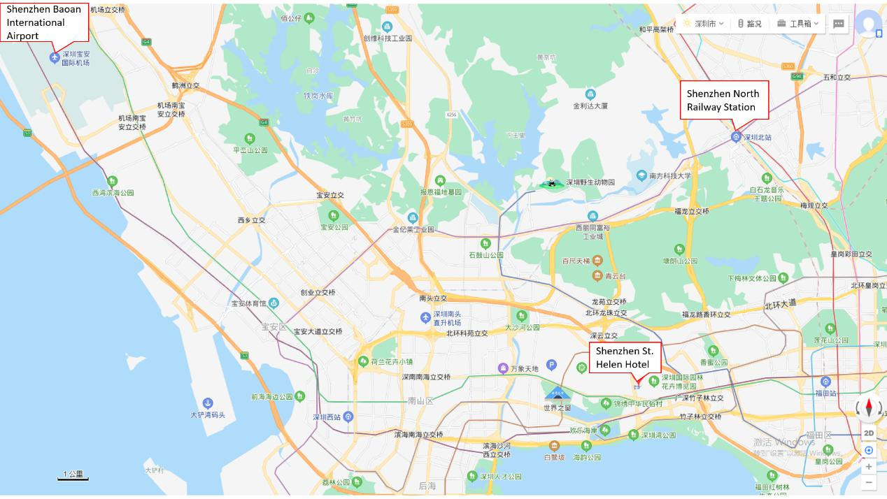

Conference Venue
PDCAT-PAAP 2020 conference venue: Shenzhen St. Helen Hotel (深圳博林圣海伦酒店), Shenzhen, Guangdong, China.
venue site address: No. 2002, Qiaocheng East Road, Futian District, Shenzhen, Guangdong, China.
Transportation
The major transportation to St. Helen Hotel has two options, i.e., Shenzhen Baoan International Airport and Shenzhen North Railway Station.
(1) Normal Taxi: available at the airport. The trip takes about 40 minutes, comes directly to the hotel. 1-4 persons about 84 CNY.
(2) Subway: Airport(机场站) → Line 11 → Qianhaiwan(前海湾站) → Line 1 → Qiaocheng East(侨城东站) → Qiaocheng East Road → St. Helen Hotel.
(1) Normal Taxi: available at the station. The trip takes about 23 minutes, comes directly to the hotel. 1-4 persons about 38 CNY.
(2) Subway: Shenzhen North Railway Station(深圳北站) → Line 4 → Convention Center(会展中心) → Line 1 → Qiaocheng East(侨城东站) → Qiaocheng East Road → St. Helen Hotel.
